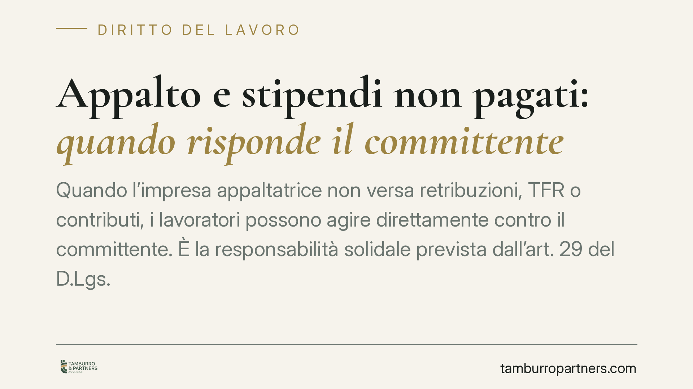

Appalto e stipendi non pagati: quando risponde il committente
Quando l'impresa appaltatrice non versa retribuzioni, TFR o contributi, i lavoratori possono agire direttamente contro il committente. È la responsabilità solidale prevista dall'art. 29 del D.Lgs. 276/2003, rafforzata dal D.L. 19/2024. Chi affida lavori in appalto deve conoscere questo vincolo: coinvolge anche i privati e comporta obblighi di verifica non trascurabili.

Il caso: appalto, stipendi non versati e chi ne risponde
Un'impresa affida a un'altra l'esecuzione di un'opera o di un servizio. L'appaltatore assume i propri dipendenti ma, a lavori conclusi, non paga stipendi, trattamento di fine rapporto (TFR) né contributi previdenziali. I lavoratori restano scoperti. Possono rivalersi anche su chi ha commissionato i lavori?
La risposta, in molti casi, è affermativa. Il meccanismo si chiama responsabilità solidale del committente: il committente risponde insieme all'appaltatore delle somme dovute ai dipendenti impiegati nell'appalto.
Inquadramento normativo
La norma di riferimento è l'art. 29, comma 2, del D.Lgs. 276/2003 (cosiddetta "legge Biagi"), come modificato dal D.L. 19/2024, convertito nella L. 56/2024.
La disposizione prevede che, in caso di appalto di opere o servizi, il committente è obbligato in solido con l'appaltatore, ed eventuali subappaltatori, a corrispondere ai lavoratori:
- i trattamenti retributivi, compreso il TFR;
- i contributi previdenziali dovuti all'INPS;
- i premi assicurativi dovuti all'INAIL.
Il vincolo copre il periodo di esecuzione del contratto di appalto e si estende ai lavoratori impiegati direttamente in quell'appalto. "Obbligazione solidale" significa che il lavoratore può chiedere l'intero importo a uno qualsiasi dei coobbligati, salvo poi il diritto di regresso di chi ha pagato verso gli altri.
Esiste un limite temporale: l'azione va esercitata entro due anni dalla cessazione dell'appalto. È un termine di decadenza: superato quel confine, il lavoratore perde la possibilità di agire contro il committente, pur restando la pretesa verso l'appaltatore soggetta ai normali termini di prescrizione.
Il D.L. 19/2024 ha inoltre ampliato la tutela alle ipotesi di appalto illecito (privo dei requisiti di genuinità, ossia mera fornitura di manodopera mascherata da appalto) e di somministrazione irregolare di lavoro. In questi casi la responsabilità del committente non è più solo un correttivo, ma la conseguenza di un uso distorto dello strumento contrattuale.
Implicazioni pratiche
Per chi affida lavori in appalto — inclusi i committenti privati e non solo le imprese strutturate — il messaggio è chiaro: la scelta dell'appaltatore non è indifferente.
Se l'appaltatore è insolvente o poco affidabile, il rischio economico si sposta sul committente. Questo può significare dover corrispondere retribuzioni arretrate, TFR e contributi anche dopo aver già pagato regolarmente il corrispettivo dell'appalto. Il pagamento del prezzo pattuito, infatti, non estingue la responsabilità verso i lavoratori.
Per i lavoratori dell'appaltatore, la solidarietà rappresenta una garanzia importante, soprattutto quando l'impresa datrice di lavoro è in difficoltà o cessa l'attività. Occorre però attivarsi con tempestività, per non incorrere nella decadenza biennale.
Un'attenzione particolare va riservata alle catene di appalto e subappalto: la responsabilità del committente può risalire lungo l'intera filiera, coinvolgendo anche i dipendenti dei subappaltatori.
Cosa fare in concreto
Per il committente:
- Verifica preventiva. Prima di stipulare, controlla la regolarità dell'appaltatore acquisendo il DURC (Documento Unico di Regolarità Contributiva) e valutando la solidità dell'impresa.
- Monitora l'esecuzione. Richiedi periodicamente prova dell'avvenuto pagamento di retribuzioni e contributi ai lavoratori impiegati nell'appalto.
- Inserisci clausole di garanzia. Prevedi in contratto obblighi di documentazione periodica, facoltà di sospensione dei pagamenti in caso di inadempimenti e clausole di manleva.
Per il lavoratore:
- Agisci nei termini. Ricorda il limite di due anni dalla fine dell'appalto: superata la decadenza, l'azione verso il committente non è più esperibile.
- Raccogli la documentazione. Conserva buste paga, contratto, prospetti contributivi e ogni prova del periodo di impiego nell'appalto.
Data la varietà delle situazioni — appalto genuino, appalto illecito, somministrazione irregolare — consigliamo di far valutare il singolo caso prima di assumere impegni contrattuali o di avviare un'azione giudiziale.
Disclaimer
Contributo informativo a cura di Tamburro & Partners - Avv. Giuseppe Tamburro. Non costituisce parere legale.
Ogni storia di lavoro ha i suoi tempi.
Se gestisci HR e vuoi un confronto su contenzioso, ispezioni o licenziamenti, scrivi allo studio. Ti rispondiamo entro un giorno lavorativo.